Wenbo Wang
PhD Candidate in Engineering Sciences
Harvard University
Broad Institute of MIT and Harvard
Harvard University · Broad Institute of MIT and Harvard
I am a PhD candidate in Engineering Sciences working at the intersection of agentic AI, flexible bioelectronics, and spatial biology.
PhD Candidate in Engineering Sciences
Harvard University
Broad Institute of MIT and Harvard
Hi, I am Wenbo, currently a PhD candidate in Engineering Sciences at Harvard University, where I work across Harvard SEAS and the Broad Institute with Professors Jia Liu and Xiao Wang.
My research focuses on the intersection of AI and biomedicine, where I build agentic AI systems, biointegrated electronics, and programmable material interfaces that sense, interpret, and adaptively modulate the function of cells, tissues, and organoids across molecular, cellular, and tissue scales.
I earned my bachelor's degree in chemistry from Zhejiang University. Before and during graduate training, I also worked at Westlake University, the University of Utah, Harvard University, and the Broad Institute.
PhD, Engineering Sciences, Harvard University, 2019 - 2026*
MS, Engineering Sciences, Harvard University, 2023
BS, Chemistry, Chu-Ko-Chen College, Zhejiang University, 2015 - 2019
Research Interests: Agentic AI for biological discovery | Cyborg tissue bioelectronics | Programmable material interfaces | Spatial & multimodal omics | Organoid maturation and modulation
*I was on leave of absence from Harvard in 2019-2020 and doing coursework remotely in 2020-2021, during the COVID-19 pandemic.
I create agentic AI systems that turn fragmented bioengineering workflows into adaptive, interpretable research processes — spanning spatial transcriptomics analysis, flexible bioelectronics design, fabrication protocol generation, visual quality control, electrophysiological signal analysis, physical laboratory guidance, and organoid phenotyping. Rather than serving only as analysis tools, these agents coordinate sensing, interpretation, intervention, and feedback so that experiments can be planned, executed, and refined autonomously.
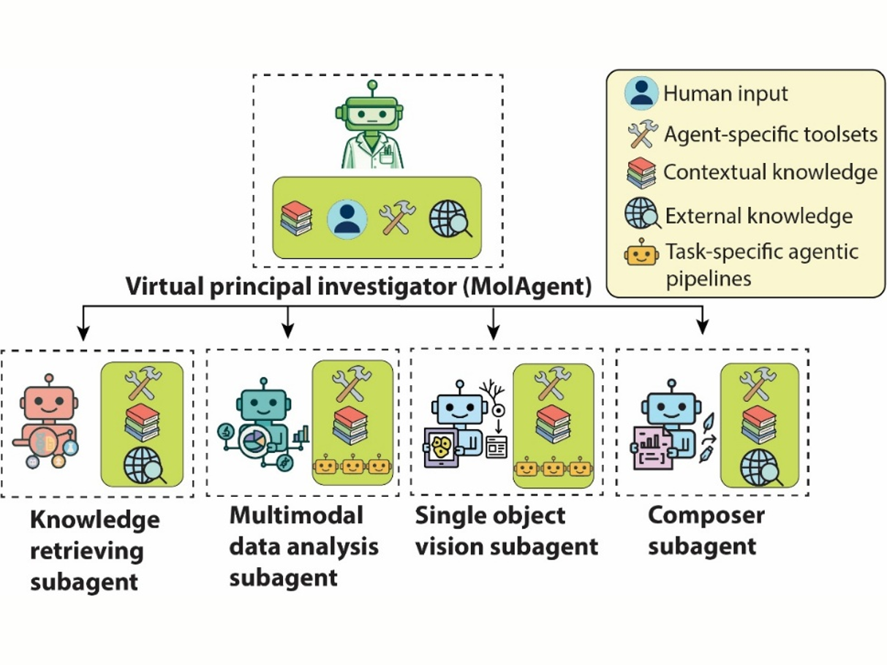
Agentic Lab: An Agentic-physical AI system for cell and organoid experimentation and manufacturing.
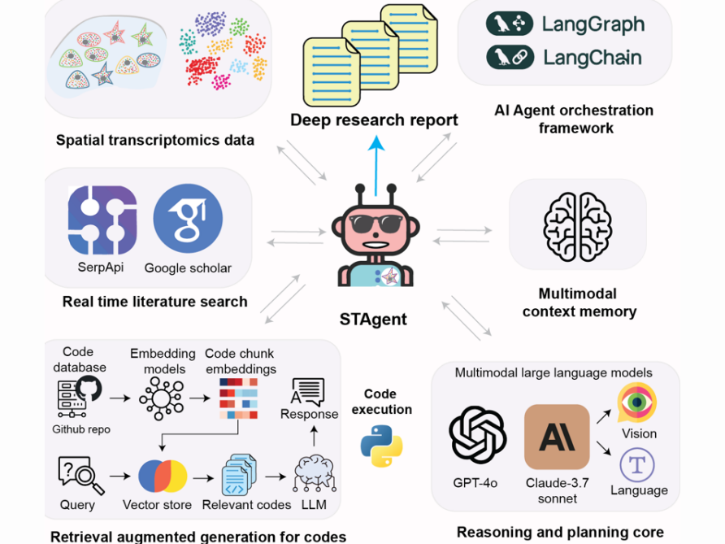
Spatial transcriptomics AI agent charts hPSC-pancreas maturation in vivo.
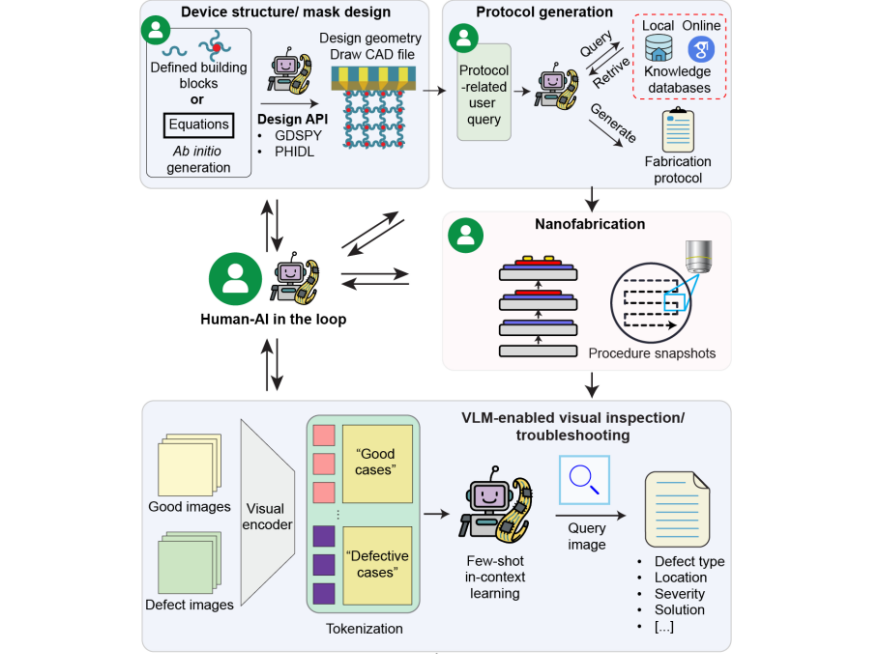
DeviceAgent: An autonomous multimodal AI agent for flexible bioelectronics.
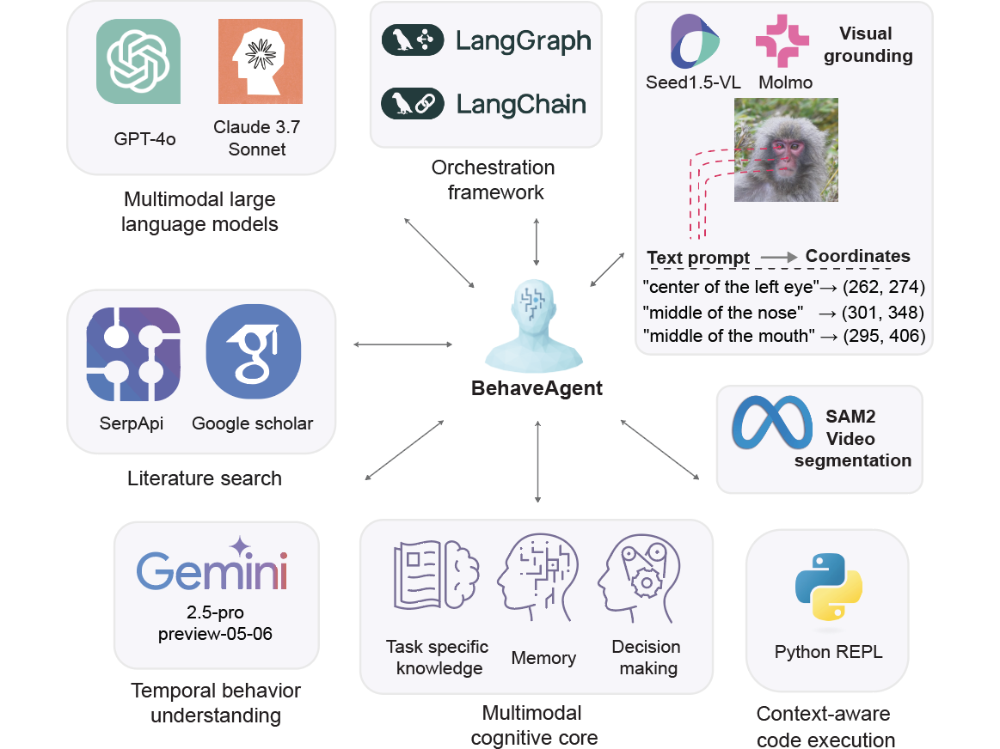
An autonomous AI agent for universal behavior analysis.
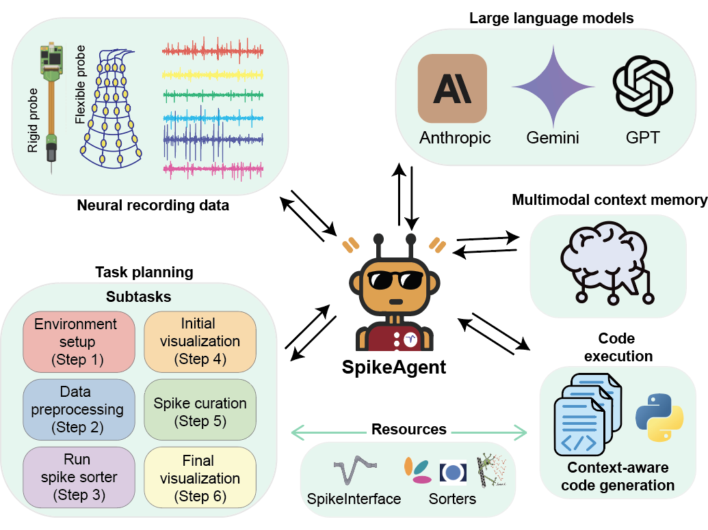
Spike sorting AI agent.
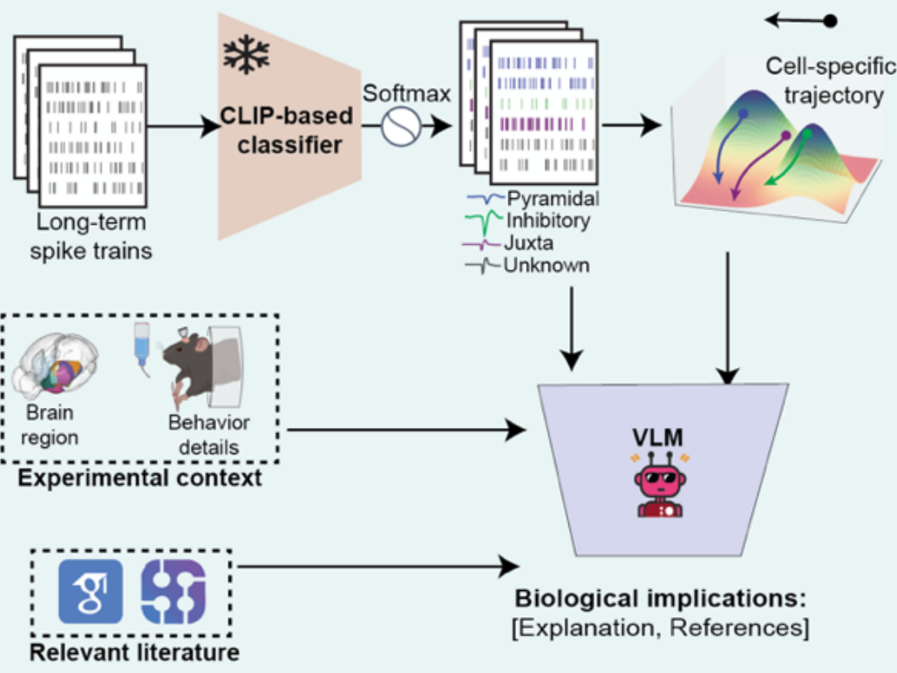
An AI agent for cell-type specific brain–computer interfaces.
I build cyborg tissue platforms that weave stretchable mesh nanoelectronics into developing 3D tissues and organoids, enabling long-term, tissue-wide, single-cell-resolution electrophysiological recording and stimulation throughout organogenesis. By reading electrical activity through transparent graphene/PEDOT mesh electronics alongside imaging-based spatial transcriptomics, these systems link function to cell identity, gene expression, and tissue microenvironment — and move from passive sensing toward adaptive modulation that can guide organoid maturation.
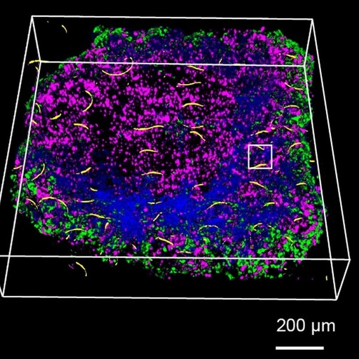
Implanted flexible electronics reveal principles of human islet cell electrical maturation.
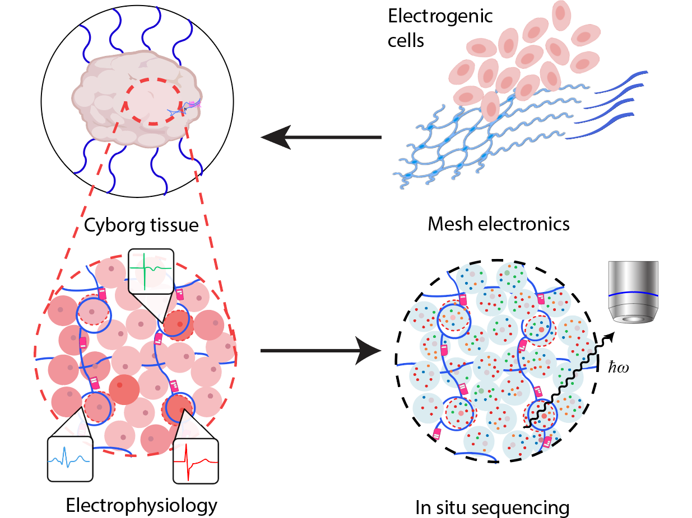
In situ Graphene-Seq: Spatial transcriptomics and chronic electrophysiological characterization of tissue microenvironments.
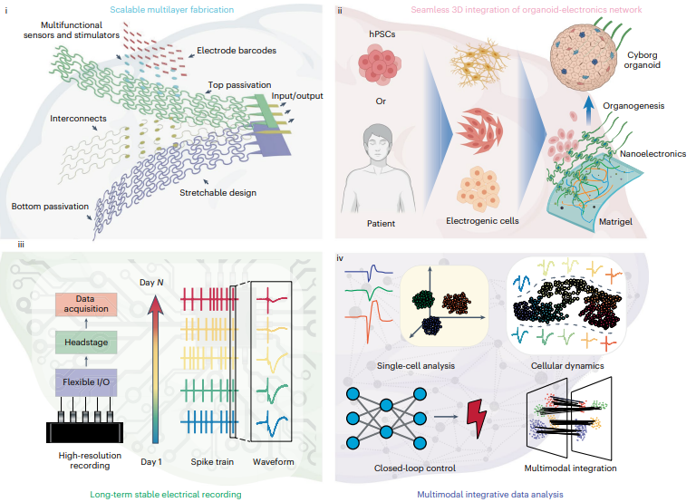
Cyborg organoids integrated with stretchable nanoelectronics can be functionally mapped during development.
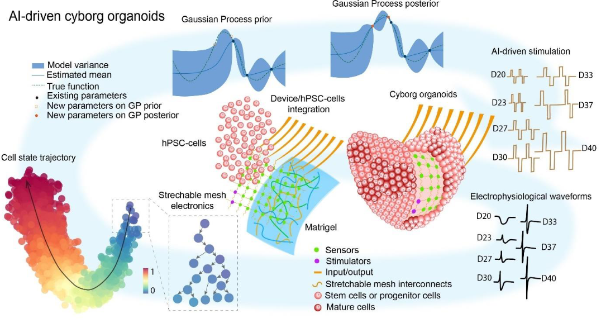
An AI-cyborg system for adaptive intelligent modulation of organoid maturation.
I develop programmable material interfaces that can be synthesized and assembled directly inside living systems to modulate biological function with genetic, optical, spatial, and temporal control. Building on in situ synthesis and optogenetic polymerization, this work patterns electrically and chemically functional materials at defined sites of action, moving modulation beyond transient, global stimulation toward spatially programmable functional tuning.
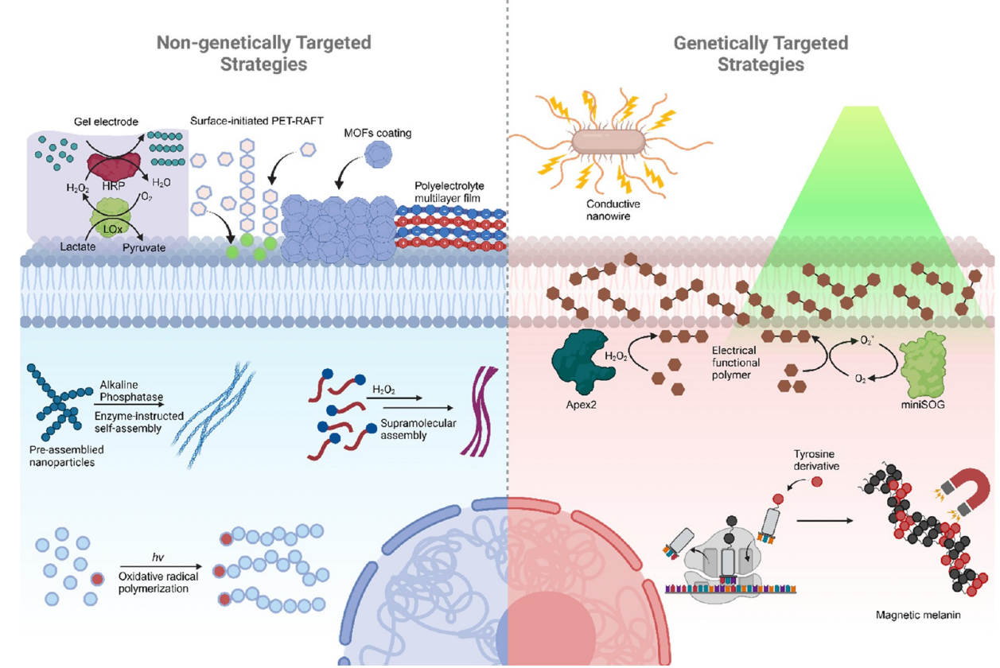
In Situ Synthesis and Assembly of Functional Materials and Devices in Living Systems.
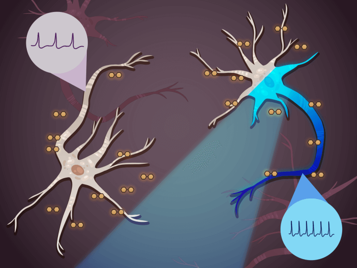
Optogenetic polymerization and assembly of electrically functional polymers for modulation of single-neuron excitability.
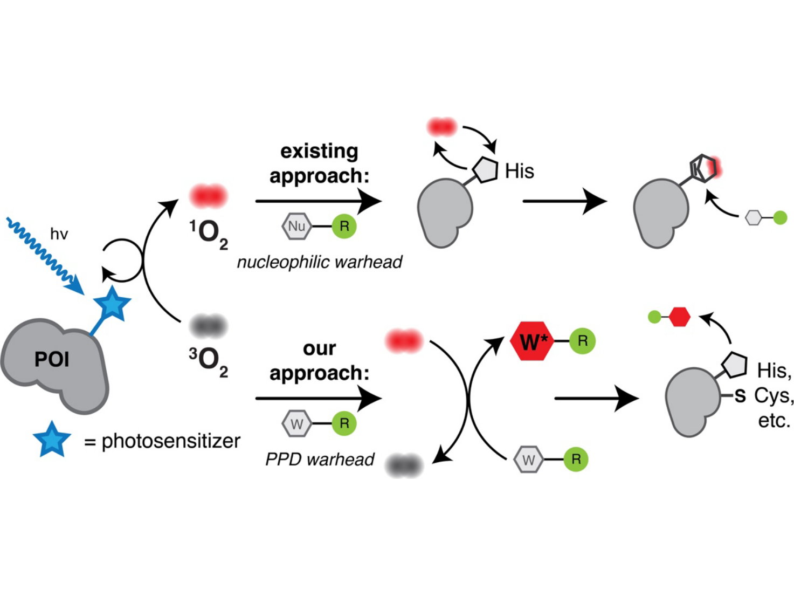
PROx-Tag: p-phenylenediamine warheads enable photosensitized proximity labeling with high sensitivity and spatial resolution.
# Equal contribution. * Corresponding author.
PhD Candidate in Engineering Sciences
School of Engineering and Applied Sciences (SEAS), Harvard University
Broad Institute of MIT and Harvard